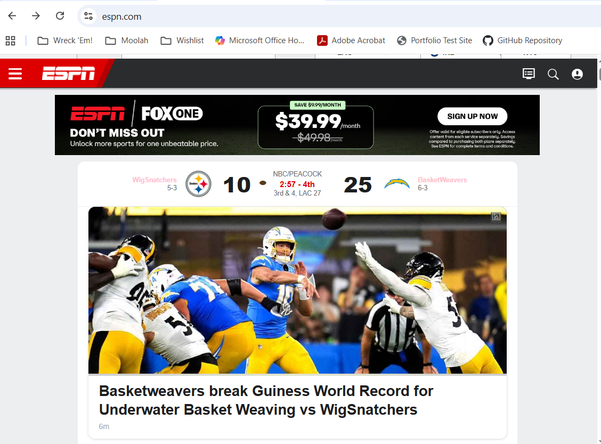

My Dev Tools Vandalism
I used browser developer tools to temporarily "vandalize" a website. Below is a screenshot showing my changes. These edits only appeared on my computer and did not affect the actual website.

What I "Vandalized"
The following are changes I made, thoughts I had while making these changes, and reflection on my deepened understanding of HTML, CSS, and devtools.
- For this exercise, I edited the team names and title of main page story.
- I modified the text size of the team names to 10px, changed the color of the team names to pink, and changed the heading for the main story.
- The names and event made my vandalism silly and fun, and that also speaks to the basis for me choosing the changes I did.
- I understood why the changes I made worked since we have learned how changing particular aspects affects the overall web page. The only thing I did nto understand why it did not work was that ESPN's website had a short name and long name designation for the team names. Changing short name changed the webpage but changing long name did not.
- This game me a much better understanding of how HTML and CSS work together to create a webpage. Both the syntax and style go hand in hand for making a webpage everything you want it to be. I learned that so many aspect can be edited to make a truly customized final product. For me, this reminded me of our previous exercises in week 1 thinking of why making one's own webpage from scratch is important. It truly is an art.
- I now understanmd how devtools can be used to edit a webpage, whether it be temporaqrily and for fun, like we have done in this exercise or for more serious use, like changing things on our personal webpages to fit a particular aesthetic or honoring a particular day/event.